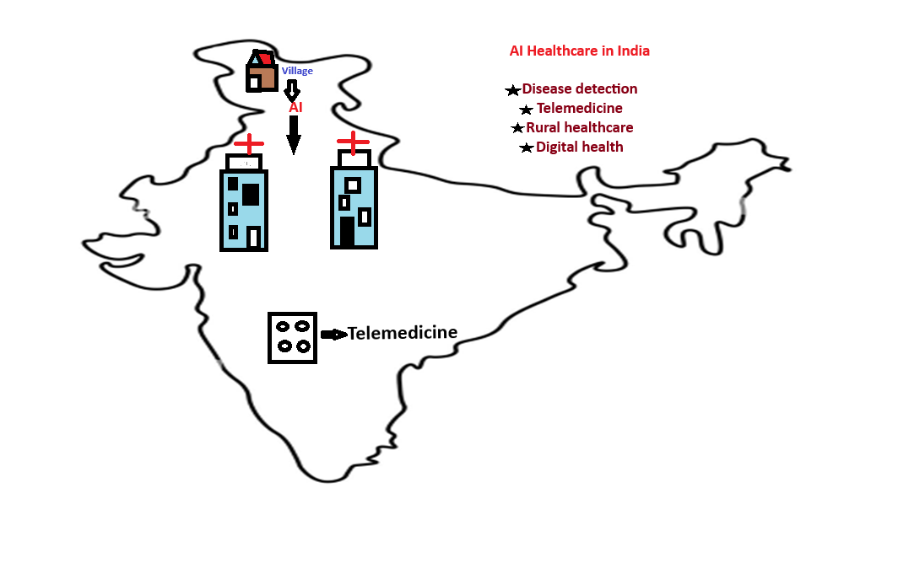

India is using Artificial Intelligence to improve healthcare services, disease detection, and medical treatment. AI helps doctors analyze medical information and provide better patient care.
Hospitals in India use AI to analyze medical reports, X-rays, CT scans, and MRI images. This helps doctors identify diseases faster.
AI-powered healthcare platforms allow patients to communicate with doctors online. This is especially helpful for people living in rural areas.
AI helps detect diseases such as tuberculosis, cancer, diabetes, and heart disease at an early stage.
The Indian government is supporting digital healthcare programs that use technology to improve access to medical services.
AI and telemedicine help provide healthcare support to people who live far away from hospitals.